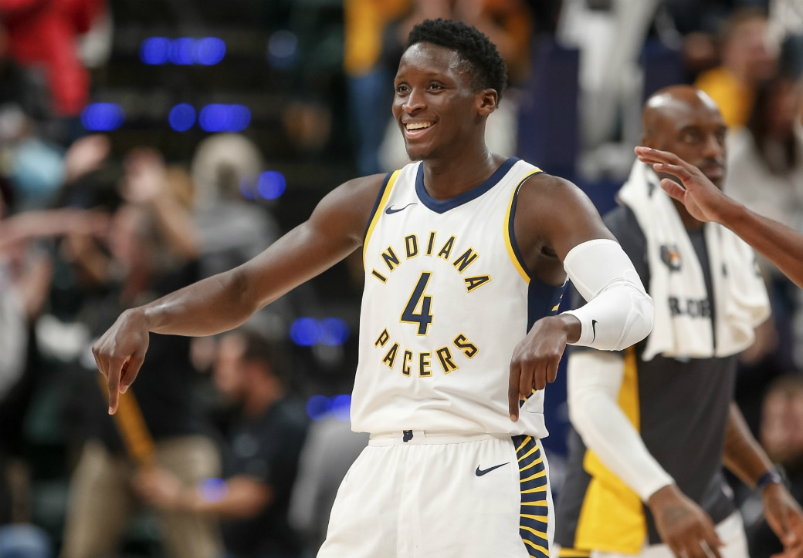

The 6’4” guard is currently injured, but assuming that he comes back the same as he was before the right-knee injury, I have him at 20. Oladipo is an athletic two-way guard that averaged 19 PTS, 5.5 REB, and 5 assists last season before going down with an injury. He’s a 2x All-Star (2018,2019), All-NBA Third Team player (2018), and also an NBA All-Defensive First Team player (2018). Pacers president, Kevin Pritchard expressed that Oladipo could return around December or January. The Pacers will have to monitor his health and minutes, but if he has the same production as pre-injury, I have the Pacers making the playoffs in a weak Eastern Conference.
The 7’1” center from France is coming in at number 19. Gobert has made an All-NBA Second and Third Team and he’s also been on the All-Defensive First Team three times, Gobert is the reigning DPOY (Defensive Player of the Year) and has won the award back-to-back times. Despite all these accolades, Gobert has still not been selected to an All-Star team, being snubbed three years in a row. Gobert is widely regarded as one of the best defenders in the league, if not, the best defender. This season, the Jazz added two-way guard Mike Conely to the roster, making the Jazz an instant playoff team with the big three of Gobert, Mitchell, and Conely. If Gobert wants to improve as a player, he will have to keep on developing his offensive game.
The All-Star shooting guard for the Washington Wizards ranks at number 18 on this list. Last season Beal averaged 25.5 PPG, 5 RPG, and 5.5 APG, but on a Wizards team that failed to make the playoffs. Before teammate and fellow All-Star, John Wall went down with an injury, Washington was once a playoff team in the east, but now they’re one of the worst teams in the Eastern Conference (32-50 record in 2018-2019 season). Beal’s shooting ability is what makes his offensive game so rich and interesting, being able to shoot the ball at a high production.
Kemba Walker is a top 5 guard in the league having his best season of his career and being an All-Star starter. The multiple time All-Star averaged 25.6 points, 4.4 rebounds, and 5.5 assists last year, he also made his first All-NBA Team selection. For his whole career so far, Kemba’s had to play on an underachieving Bobcats/ Hornets (Rebranded from Bobcats to Hornets in 2014) team and this year he’s finally free. This summer he signed with the Boston Celtics, which were formerly led by Kyrie Irving, therefore there will be lots of comparisons between the two guards. Kemba could potentially be higher up on this list, but he has yet to prove that he can lead a playoff team to success.
Jimmy Butler is one of the better two-way players in the league as he has made All-Star teams, all-NBA Teams, and All Defensive Teams too. Butler is the type of player who can drop the most points in the game as well as guard the other team's best player. When the game becomes tight in the final minutes, Butler is a guy you can rely on to turn the tides. The Heat roster will have to train and work as hard as Jimmy does on a regular basis, as Butler has a winning mindset, making him a very intense player.